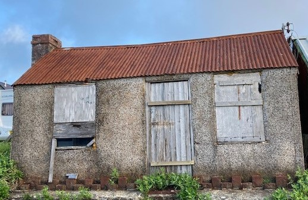

Y Siop Chips
Cychwynnwyd y siop chips gan Mrs Jones, gwraig y gof, Gorslwyd. Yna bu Mary Griffths yn ei chadw a Mrs T.O. Williams yn nes ymlaen. Yn y 1950au roedd plant y pentref yn cael 2/6 neu ddau swllt am dynnu ll’gada’r tatws. Ar ôl gorffen mi fyddai Mary yn chwarae Brag-pontoon. Byddai’r plant o hyd yn colli’r cwbl erbyn gorffen chwarae cardiau. Blodwen, Blaenau fyddai’n dod â thatws i’r siop chips mewn ceffyl a throl bach a allai gario 4 o bobl. Roedd sêt ddwy ochr i’r drol a drws bach yn y cefn.
Agorwyd y siop gan Mrs Jones, y gof. Wedyn bu Mary Griffith, Fron yn rhedeg y siop cyn i Mrs T.O. Williams, Katie gymryd yr awennau. Cofia Dewi Williams, Brynmor, fynd yn blant i dynnu ll’gada o’r tatws i wneud y chips. Roedden nhw’m gwneud hyn yn y Becws, ac yn cael 2/6 neu ddau swllt am wneud. Ar ôl gorffen mi fyddai Mary yn tynnu pac o gardiau er mwyn chwarae Brag-pontoon hefo’r cyflog roeddan nhw newydd ei ennill.
Cofia Dewi
Pan oedd Mrs T.O. Wiliams yn rhedeg y siop byddai Lizzie Jane, Caermynydd yn y siop bob nos pan oedd hi’n agored, a hynny tan amser cau, oherwydd ei bod yn gynnes yno. Byddai’n mynd â’i photel ddŵr poeth efo hi ac yn cael dŵr i’w llenwi er mwyn iddi fynd yn syth i’w gwely.
Llun o’r Siop Chips yn 2021